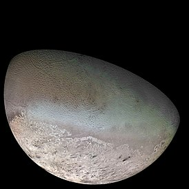

Нептун - последняя планета Солнечной системы
Вторая планета (после Урана), открытая в «Новое время» – Нептун – является четвертой по размеру и восьмой по расстоянию планетой от Солнца. Его назвали в честь римского морского бога, аналогичному Посейдону у греков. После открытия Урана, ученые всего мира начали спорить, т.к. траектория его орбиты не совсем соответствовала всемирному закону тяготения, открытого Ньютоном.
Это натолкнуло их на мысль о существовании еще одной планеты, пока не известной, которая и влияла своим гравитационным полем на орбиту седьмой планеты. Через 65 лет после открытия Урана, 23 сентября 1846 года была открыта планета Нептун. Она была первой планетой, которую открыли при помощи математических расчетов, а не с помощью долгих наблюдений. Расчеты начал англичанин Джон Адамс еще в 1845 году, но они были не совсем верные. Их продолжил Урбен Леверье – астроном и математик, родом из Франции. Он рассчитал положение планеты с такой точностью, что ее нашли в первых же вечер наблюдений, поэтому Леверье стали считать первооткрывателем планеты. Англичане запротестовали и после длительных споров, все признали немалый вклад Адамса, и он так же считается первооткрывателем Нептуна. Это был прорыв в расчетной астрономии! Нептун до 1930 года, считался самой далекой и последней планетой. Открытие Плутона, сделало его предпоследним. Но в 2006 году МАС — «Международный Астрономический Союз», принял более точную формулировку определения «планета», и Плутон стал считаться «карликовой планетой», а Нептун снова стал последней планетой нашей солнечной системы.
Внутреннее строение
Характеристики Нептуна были получены только с помощью одного космического аппарата «Вояджер-2». Все фотографии, были получены именно с него. В 1989 году, он прошел в 4,5 тыс. км от планеты, обнаружив несколько новых спутников и зафиксировав «Большое темное пятно», наподобие «Красного пятна» на Юпитере.
Строение Нептуна по своему составу, очень близко к Урану. Он тоже является газообразной планетой с твердым ядром, массой примерно с Землю и температурой, как на поверхности Солнца – до 7000 К. При этом, общая масса Нептуна примерно в 17 раз более массы Земли. Ядро восьмой планеты, окутывает мантия из воды, метанового льда и аммиака. Далее идет атмосфера, она включает в себя 80% водорода, 19% гелия и около 1% метана. Из метана состоят и верхние облака планеты, которые поглощают спектр красного цвета солнечных лучей, поэтому в цвете планете доминирует синий. Температура верхних слоев составляет – 200 °С. В атмосфере Нептуна зафиксированы самые сильные ветра, среди всех известных планет. Их скорость может достигать 2100 км/ч! Располагаясь на расстоянии 30 а. е., полный оборот вокруг Солнца, занимает у Нептуна почти 165 земных лет, поэтому, с момента своего открытия, он совершит свой первый полный оборот только в 2011 году.
Атмосфера
Атмосфера состоит из 82% водорода и 17% гелия. Остальное – метан, который и создаёт сочный синий цвет планеты. Чем выше от поверхности, тем меньше давление и ниже температура. В тропопаузе давление падает до 0,1 бар, а температура до – 220°C. Поис тине, планета Нептун – синее царство холода.

Выше, в стратосфере, температура растёт, достигая 475°C. Верхние слои атмосферы в непрерывном движении. В экваториальных районах метановые облака развивают скорость больше 2000 км/час. С приближениям к полюсам скорость падает. Облачная масса движется против направления вращения Нептуна.
Ураганы
Вопреки ожиданиям малоподвижности атмосферы, плане та предстала царством ураганов. Огромные атмосферн ые вихри достигают 5000 км в поперечнике. Они выде ляются на светло-синем фоне овалами тонов, более тёмных. Ураганы тут длятся месяцы и даже годы.
Большое тёмное пятно
Это самый известный из наблюдаемых ураганов. Его р азмеры 13000х6600 км. Громадный вихрь продвигался к западу, имея скорость 300 м/сек и наблюдался пят ь лет. Потом он либо оказался закрытым облачной ма ссой, либо закончился.

Кольца
Кольцевая система Нептуна гораздо менее существенна, чем, к примеру, у Сатурна. В систему колец Нептуна входит 5 компонентов.
Состав
Кольца могут состоять из ледяных частиц, покрытых силикатами, или основанным на углероде материалом, — наиболее вероятно, это он придаёт им красноватый оттенок.
Характеристики колец
Относительно узкое, самое внешнее, расположенное в 63 000 км от центра планеты — кольцо Адамса; кольцо Леверье на удалении в 53 000 км от центра и более широкое; более слабое кольцо Галле на расстоянии в 42 000 км. Кольцо Араго расположено на расстоянии в 57 000 км. От внешних границ кольца Леверье до внутренних границ кольца Араго располагается широкое кольцо Ласселла.
Открытие и исследование
Первое кольцо Нептуна было обнаружено в 1968 году командой астрономов во главе с Эдвардом Гвинаном. Но позже считалось, что это кольцо могло быть неполным, дефектным. Такое мнение возобладало после наблюдения за покрытием кольцами звезды в 1984 году, когда кольца затмили звезду во время её входа в тень, а не по выходе из неё. Изображения «Вояджера-2» от 1989 года разрешили эту проблему, поскольку было обнаружено ещё несколько слабых колец, но с достаточно массивной структурой. Причина этого так и не выяснена до сих пор, но это могло произойти из-за гравитационного взаимодействия с маленькими спутниками на орбите поблизости от колец. Наиболее удалённое кольцо Адамс, как теперь известно, содержит 5 «дуг» под названием: «Храбрость», «Liberté», «Egalité 1», «Egalité 2», и «Fraternité» (Свобода, Равенство 1, Равенство 2 и Братство).Существование этих дуг было трудно объяснить, потому что законы механики предсказывают, что они должны были бы за достаточно короткий момент времени соединиться в однородное кольцо. Считалось, что в таком положении дуги удерживает гравитационное влияние спутника Нептуна — Галатеи, которая обращается вокруг Нептуна вблизи от внутренней границы кольца Адамса. Однако новые исследования показывают, что влияние гравитации Галатеи недостаточно для того, чтобы удерживать материал колец в том положении, в котором он находится сейчас. Наблюдаемые результаты можно объяснить присутствием ещё одного спутника Нептуна, который может иметь достаточно малый размер (до 6 км), и вследствие этого может быть ещё не открыт. Наблюдения с поверхности Земли, опубликованные в 2005 году, показали, что кольца Нептуна намного более непостоянны, чем считалось ранее. Изображения, полученные обсерваторией Кек (Гавайские острова) в 2002 и 2003 году, показывают значительные перемены по сравнению с изображениями «Вояджера-2». В частности, кажется, что дуга «Liberté» может исчезнуть всего через столетие.
Спутники Нептуна
Всего у планеты имеется 14 спутников, но не все он и еще детально изучены. Рассмотрим крупнейшие из них.

Трито́н (др.-греч. Τρίτων) — крупнейший спутник Нептуна, открытый английским астрономом Уильямом Ласселом 10 октября 1846 года. Седьмой по величине спутник Солнечной системы и единственный крупный спутник Солнечной системы с ретроградным движением по орбите. Из-за ретроградного движения и схожести состава с Плутоном считается захваченным из пояса Койпера.
Предполагается, что Тритон имеет массивное каменно-металлическое ядро, составляющее до ⅔ его общей массы, окружённое ледяной мантией с коркой водяного льда и слоем азотного льда на поверхности. Содержание водяного льда в составе Тритона оценивается от 15 до 35 %.
Тритон — один из немногих геологически активных спутников в Солнечной системе. О его сложной геологической истории свидетельствуют следы тектонической активности, замысловатый рельеф и многочисленные криовулканы, извергающие азот. Давление разреженной азотной атмосферы составляет около 1/2000 от давления земной атмосферы на уровне моря.
Поверхность
Поверхность Тритона покрыта метановым и азотным льдами, поэтому хорошо отражает солнечный свет. Во время пролёта «Вояджера» бо́льшую часть южного полушария покрывала полярная шапка.
Средняя температура поверхности Тритона составляет 38 К (-235°C). Это настолько холодная поверхность, что азот, вероятно, оседает на ней в виде инея или снега. Таким образом, Тритон, предположительно, является самым холодным объектом в Солнечной системе из тех, что обладают геологической активностью.
Вблизи экватора на обращённой к Нептуну стороне Тритона обнаружены по крайней мере два (а возможно и больше) образования, напоминающие замёрзшее озеро с террасами на берегах с высотой ступеней до километра. Их возникновение, по-видимому, связано с последовательными эпохами замерзания и плавления, с каждым разом охватывавшими всё меньший объём вещества. Даже в условиях поверхности Тритона метановый или аммиачный лёд недостаточно прочны, чтобы удерживать такие перепады высот, поэтому полагают, что в основе террас лежит водяной лёд. Не исключено, что в результате приливного взаимодействия на Тритоне в течение миллиардов лет могла существовать жидкость.
Южная полярная шапка из розового, жёлтого и белого материала занимает значительную часть южного полушария спутника. Этот материал состоит из азотного льда с включениями метана и монооксида углерода. Слабое ультрафиолетовое излучение от Солнца действует на метан, вызывая химические реакции, приводящие к появлению розовато-жёлтой субстанции.
Как и на Плутоне, на Тритоне азотные льды покрывают около 55 % поверхности, 20-35 % приходится на водяной лёд и 10-25 % на сухой лёд. Также поверхность Тритона (в основном в южной полярной шапке) покрыта незначительными количествами замёрзших метана и угарного газа — 0,1 % и 0,05 % соответственно.
На поверхности Тритона мало ударных кратеров, что говорит о геологической активности спутника. По мнению ряда исследователей, возраст поверхности Тритона не превышает 100 млн лет. В полученных «Вояджером-2» данных было зафиксировано всего 179 кратеров, ударное происхождение которых не подвергается сомнению. Для сравнения, на Миранде, спутнике Урана, зафиксировано 835 кратеров, при этом площадь поверхности Миранды составляет 3 % от площади поверхности Тритона. Самая большая из найденных ударных структур на Тритоне, названная «Мазомба», имеет диаметр 27 км. При всём этом на Тритоне обнаружено множество огромных кратеров (некоторые размерами больше «Мазомбы»), происхождение которых связано с геологической активностью, а не со столкновениями.
Большинство кратеров Тритона сконцентрировано в том полушарии, которое смотрит по направлению движения. Учёные ожидают найти меньшее количество кратеров на полушарии Тритона, смотрящем против движения. Как бы то ни было, «Вояджер 2» исследовал только 40 % поверхности Тритона, поэтому в будущем вполне возможно нахождение гораздо большего числа ударных кратеров ещё больших размеров, чем «Мазомба».
На поверхности Тритона (в основном в западном полушарии) довольно большую площадь занимает уникальная местность, рельеф на которой напоминает дынную корку. В Солнечной системе такая поверхность не встречается больше нигде. Она так и называется — Местность дынной корки (Cantaloupe terrain). На Местности дынной корки количество ударных кратеров невелико, однако эта местность считается древнейшей на спутнике. Здесь встречаются огромные круглые структуры размерами 30-40 км в диаметре, однако их происхождение не связывают с ударными столкновениями, так как эти структуры приблизительно одинаковых размеров, имеют кривую форму, гладкие высокие края (ударные кратеры в большинстве своём имеют круглую форму, их края пологие и сглаженные). Их происхождение связывают с таким явлением, как диапир.
Нереи́да (др.-греч. Νηρεΐς, англ. Nereid) — спутник Нептуна, открытый 1 мая 1949 года Джерардом Койпером. Назван в честь нереид — морских нимф из греческой мифологии. Диаметр Нереиды — 340 км, это третий по величине спутник Нептуна (после Тритона и Протея). Её орбита имеет один из самых больших эксцентриситетов среди спутников Солнечной системы (0,75), её расстояние до Нептуна колеблется от 1,4 млн км до 9,6 млн км (в среднем 5,5 млн километров). Высокий эксцентриситет орбиты говорит о том, что спутник, возможно, является астероидом или объектом пояса Койпера, захваченным Нептуном. Долгое время Нереида считалась самым удалённым спутником Нептуна.
В 1989 году мимо Нептуна пролетал зонд «Вояджер-2». Нереида в тот момент находилась на расстоянии 4,7 млн км (не в самой близкой точке своей орбиты). С такого большого расстояния получить подробные снимки Нереиды не удалось. Нереида остаётся одним из самых малоизученных спутников в Солнечной системе.
Проте́й (др.-греч. Πρωτεύς), известный также как Нептун VIII, — второй по размерам спутник Нептуна и крупнейший его внутренний спутник. Протей также является самым крупным несферическим спутником в Солнечной системе. Назван в честь Протея, морского божества в древнегреческой мифологии.